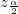

片側検出力：
両側検出力
: サンプルサイズ
: 真の母比率
: 仮説比率
: 正規分布のαレベルの上側棄却限界値
: 正規分布のα/2レベルの両側棄却限界値
は標準正規分布の累積分布関数を表しています。
Originは、検出力等価で反復アルゴリズムを使用しています。各反復において、トライアルサンプルサイズのためのパワーが評価され、評価されたパワーが整数サンプルサイズに対応する値、および、目標値よりも大きい、最も近い到達したときに反復は停止されます。
/math-d654bb0f7d419bec42335d0c0b87a4d1.png "H_0:P\ge P_0")
/math-7b8b965ad4bca0e41ab51de7b31363a1.png) : サンプルサイズ
: サンプルサイズ/math-83878c91171338902e0fe0fb97a8c47a.png) : 真の母比率
: 真の母比率/math-800618943025315f869e4e1f09471012.png) は標準正規分布の累積分布関数を表しています。
は標準正規分布の累積分布関数を表しています。